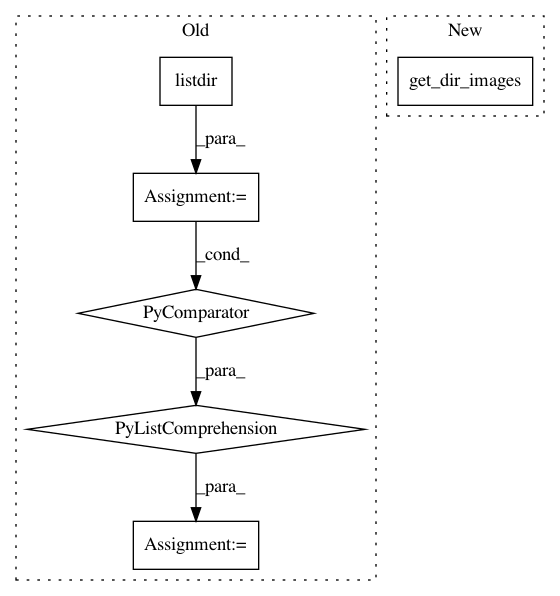

ee63af01e28b1ac2b31eda1a28aa72920bc9dd6a,deepplantphenomics/semantic_segmentation_model.py,SemanticSegmentationModel,load_dataset_from_directory_with_segmentation_masks,#SemanticSegmentationModel#Any#Any#,319
Before Change
:param seg_dirname: the path of the directory containing ground-truth binary segmentation masks
image_files = [os.path.join(dirname, name) for name in os.listdir(dirname) if
os.path.isfile(os.path.join(dirname, name)) & name.endswith(".png")]
seg_files = [os.path.join(seg_dirname, name) for name in os.listdir(seg_dirname) if
os.path.isfile(os.path.join(seg_dirname, name)) & name.endswith(".png")]
After Change
:param seg_dirname: the path of the directory containing ground-truth binary segmentation masks
self._raw_image_files = loaders.get_dir_images(dirname)
self._raw_labels = loaders.get_dir_images(seg_dirname)
if self._with_patching:
self._raw_image_files, self._raw_labels = self.__autopatch_segmentation_dataset()
In pattern: SUPERPATTERN
Frequency: 3
Non-data size: 6
Instances
Project Name: p2irc/deepplantphenomics
Commit Name: ee63af01e28b1ac2b31eda1a28aa72920bc9dd6a
Time: 2019-10-08
Author: dbl599@mail.usask.ca
File Name: deepplantphenomics/semantic_segmentation_model.py
Class Name: SemanticSegmentationModel
Method Name: load_dataset_from_directory_with_segmentation_masks
Project Name: p2irc/deepplantphenomics
Commit Name: 2c34a47f683dedb310f1c92be66870163cf80302
Time: 2019-10-10
Author: dbl599@mail.usask.ca
File Name: deepplantphenomics/heatmap_object_counting_model.py
Class Name: HeatmapObjectCountingModel
Method Name: load_heatmap_dataset_with_csv_from_directory
Project Name: p2irc/deepplantphenomics
Commit Name: c303b9dbcf79d067c688dbe9c0fb5b77076e920c
Time: 2019-10-15
Author: dbl599@mail.usask.ca
File Name: deepplantphenomics/object_detection_model.py
Class Name: ObjectDetectionModel
Method Name: load_yolo_dataset_from_directory